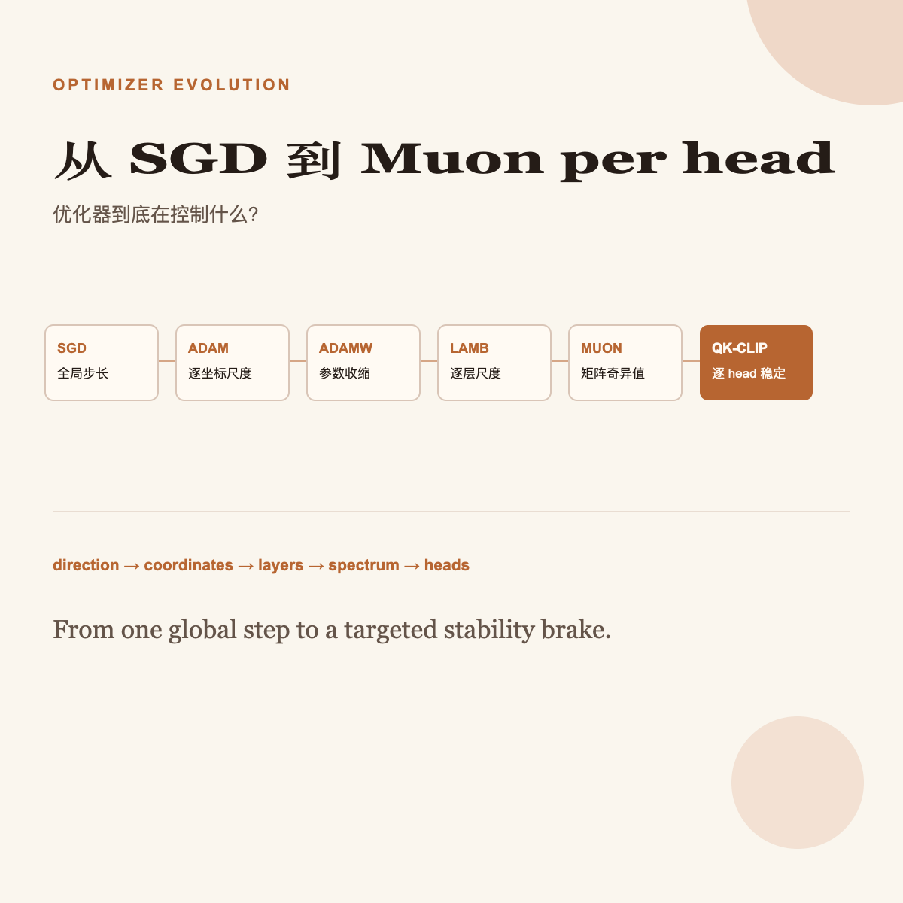

AI · Optimization
从 SGD 到 Muon per head：优化器到底在控制什么？
优化器的演进不是不断“加技巧”，而是把更新的控制粒度从一个全局步长，一路推进到坐标、层、矩阵奇异值，最后到每一个 attention head。

控制方向
控制坐标尺度
控制参数范数
控制层尺度
控制矩阵谱
控制注意力稳定性
统一记号：所有人都在改这一行
令参数为 θt，随机梯度为 gt = ∇L(θt)。所有优化器都可写成：
差别全藏在更新 ut：它可以是原始梯度、逐元素归一化后的梯度、按层重缩放的梯度，或一个具有特定奇异值谱的矩阵。
1. SGD：先相信梯度 1950s–
完整数据集的梯度太贵。每次只看一个 mini-batch，也希望平均而言往下降。
WHAT用一个全局步长，沿负梯度走。
FORMULA把大规模学习变成可扩展的随机优化。动量用历史梯度平滑噪声，但本质仍是共享全局尺度。
RESULT简单、状态少、泛化常很强，长期是视觉任务的硬基线。
LIMITATION所有坐标、所有层共享 η。稀疏梯度、曲率和层尺度不均时，同一把尺子太粗。
2. Adam：给每个坐标一把尺子 Kingma & Ba, 2014
有的参数梯度持续很大，有的很稀疏；单步方向又有噪声。SGD 的单一 η 对它们并不公平。
WHAT一阶矩估计方向，二阶矩估计每个坐标的 RMS，再做 bias correction。
FORMULA合并 momentum 和 RMSProp。大梯度坐标自动慢一点，稀疏坐标相对快一点，成为近乎“开箱即用”的默认选择。
RESULT在非平稳、噪声大、稀疏梯度的任务上实用，迅速成为 Transformer 训练的共同语言。
LIMITATION每个参数保存 m、v 两份状态；更关键的是，逐元素预条件会扭曲正则化。“Adam + L2”并不等于真正的 weight decay。
3. AdamW：把“学得快”和“别长太大”拆开 Loshchilov & Hutter, 2017/2019
对 SGD，向 loss 加 λ‖θ‖²/2 与每步缩小参数等价；对 Adam，λθ 会进 m、v，再被 √v̂ 逐坐标缩放，二者不再等价。
WHAT先做 Adam 的数据梯度更新，再独立收缩参数。
FORMULAweight decay 从自适应预条件器中解耦：学习率决定优化步长，λ 决定参数收缩，两个超参不再被绑死。
RESULT原论文在图像分类上改善 Adam 的泛化，让 Adam 族能与 momentum SGD 竞争；它后来成为语言模型训练的默认基线。
LIMITATION它修复的是正则化语义，不是层间尺度或矩阵几何；仍是逐元素 adaptive method，状态内存依然很重。
4. LAMB：每一层也要有自己的相对步长 You et al., 2019
batch 大到几万时，AdamW 的不同层更新幅度差别很大；一个全局 η 难以让所有层同步、稳定地扩大 batch。
WHAT保留 Adam 型逐坐标方向，再用 trust ratio 把每层更新范数对齐到参数范数。
FORMULA在“每个元素”和“全模型”之间增加 layer-wise 粒度：每层按自身权重尺度走相似的相对距离。
RESULT论文报告 BERT 在 batch 32,768 下无性能损失；mixed-batch training 下在 TPUv3 Pod 上把预训练从约 3 天压到 76 分钟。
LIMITATION仍沿用 Adam 的 diagonal 预条件，状态重；trust ratio 只看整层范数，看不到矩阵内不同奇异方向的失衡。
5. Muon：不要逐元素改矩阵，直接改它的谱 Jordan, 2024；Moonshot AI, 2025
Transformer 的大量容量在 2D linear weights。逐元素除 RMS 只看坐标轴；矩阵真正的病态、冗余与有效更新方向由奇异值结构决定。
WHAT先积累 momentum，再把这个矩阵近似投影成所有非零奇异值都接近 1 的极分解因子。
FORMULA核心不是“二阶”标签，而是矩阵更新正交化：用 GPU 友好的 Newton–Schulz 迭代近似 polar factor，避免显式 SVD。通常只用于 2D 权重；bias、norm、embedding 等 1D 参数仍交给 AdamW。
RESULTMoonlight 报告称：加入 weight decay 与正确的 per-parameter update scale 后，Muon 在 compute-optimal scaling 实验中约有 AdamW 的 2× 计算效率；其 3B activated / 16B total MoE 用 5.7T tokens 训练。
LIMITATION不是替换一行 optimizer：矩阵形状与 RMS 需仔细缩放，1D 参数须混用别的优化器；Newton–Schulz 还增加计算与数值实现要求。放大时 attention logits 仍可能爆炸。
6. MuonClip：把爆炸的 attention head 单独拉回来 Kimi K2, 2025
Muon 很 token-efficient，但放大训练时，极少数 head 的 QK 点积会先冲高，随后 loss spike 或发散。对全部 head 一刀切会伤到正常 head。
WHATMuon 更新后，监控每个 head 的最大 attention logit；只缩小超阈值 head 的 Q/K 权重。这就是 “Muon per head”。
FORMULAQK-Clip 从权重源头约束 logits，不是在 softmax 前截断已经爆炸的数值。per-head γh 精确限定在失控 head；对 MLA，只缩放非共享的 head-specific 分量，避免影响其他 head。
RESULTKimi K2 将 Muon、weight decay、一致 update-RMS scaling 和 QK-Clip 组合为 MuonClip；技术报告称其 1T 参数、32B activated 的 MoE 在 15.5T tokens 预训练中零 loss spike。
LIMITATION这是 attention instability 的针对性稳定器，不是普适“更好 Muon”的定理。阈值 τ、统计窗口、MHA/MLA 的实现细节都会影响行为，不能替代初始化、precision 与 learning-rate schedule。
把路线压成一张表
| 方法 | 新增控制量 | 解决什么 | 留下什么 |
|---|---|---|---|
| SGD | 全局 η | 随机梯度能否学习 | 各层各坐标同尺 |
| Adam | 逐坐标 1/√v̂ | 噪声、稀疏、尺度不均 | 正则被扭曲；状态重 |
| AdamW | 独立 λ | adaptive method 的 decay | 仍是 diagonal geometry |
| LAMB | 逐层 r(l) | 大 batch 层间失衡 | 看不到层内奇异方向 |
| Muon | UVT | 矩阵更新的谱与冗余 | attention 稳定性 |
| MuonClip | 逐 head γ(h) | 少数 QK logits 爆炸 | 阈值与架构特定 |
真正的主线：控制对象越来越接近故障发生的尺度
这不是一条“新方法取代旧方法”的直线。真实训练栈常是混合的：Muon 管 2D matrices，AdamW 管 1D parameters，weight decay 仍在，MuonClip 只在注意力出现风险时介入。
Muon per head 不是“把 Muon 按 head 跑一遍”。Muon 给矩阵更均衡的更新；per-head QK-Clip 在极少数 head 的注意力分数开始爆炸时，精准踩一脚刹车。
资料来源
- Kingma & Ba, Adam: A Method for Stochastic Optimization
- Loshchilov & Hutter, Decoupled Weight Decay Regularization
- You et al., Large Batch Optimization for Deep Learning: Training BERT in 76 minutes
- Moonshot AI, Muon is Scalable for LLM Training
- Moonshot AI, Kimi K2: Open Agentic Intelligence（MuonClip、QK-Clip 与 per-head 细节）
喜欢这篇文章？发到自己邮箱，稍后阅读。